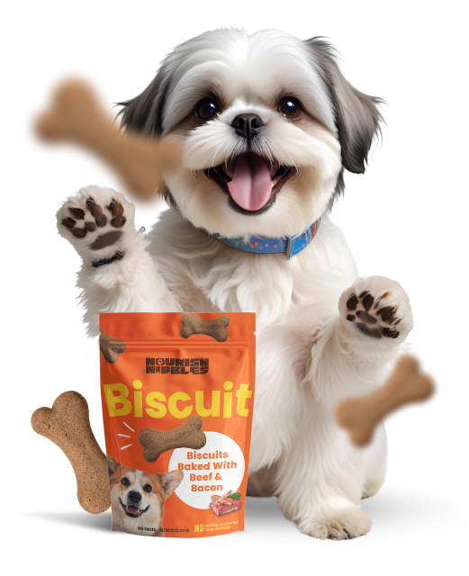

Jordan Boswell"Genuinely has improved my dog's digestion. Lola now eats her breakfast as soon as its put in her bowl and then eats her plain kibble at dinner time without any issues. I have also found her anxiety has calmed massively."
Made for Dogs from 4 Months old & Up
Reward your furbaby with this healthy doggo treats
A bag full of little sausage dog treats packed with irresistible proper meat and offal

Why doggos love Nourish Nibbles
Made with freshly prepared duck and venison, a source of protein, with a satisfyingly chewy texture, these snack-size sausages are just what the doggo ordered. They're also made to a grain-free recipe with natural ingredients, so your furry family can enjoy them, like, every single day, if they so wish.
- Made with Proper Meat and Offal
- Made with Natural Ingredients
- Made with Grain-Free Recipe
- For Adult for Dogs from 4 months & up
Customer Testimonials
Alice in Wonderland"I have two terriers with slightly sensitive stomachs and a tendency to be a bit fussy. After trying them on Nourish Nibbles' grain free wet and dry foods they are loving their meals and their tummies and poos have been much more settled."
Willy Wonka"My dog loves this food! I ordered the wet food in the foil trays. Three variety packs, two grain free and one normal. It arrived very quickly, packed well. Very happy with the service. Will definitely buy again."
Frequently Asked Questions
What makes Nourish Nibbles different from other brands?
We believe that the Nourish Nibbles range is simply the best you can feed your pet - we use healthy, nutritious, natural ingredients with carefully chosen vitamins and minerals, to help keep your pet in the best condition. Our recipes use only proper meat which is either fresh or freshly prepared, no cheap fillers and absolutely no nasties whatsoever. You can even smell the difference - our foods smell absolutely delicious!
What do you mean by Proper Meat?
We choose to include a top notch mixture of muscle meat and organ meat in our recipes. That's because offal contains vital nutrients not found in muscle meat, is a rich source of vitamins, minerals and amino acids, and is utterly delicious to pets.
What do you mean by Proper Meat?
It's important when introducing a new diet that you do it gradually over a period of approximately 5-7 days. This is so your pet's digestive system can become accustomed to the new diet. We would recommend that you introduce Nourish Nibbles by mixing a small quantity with your pet's current food and then increasing the proportion until you are feeding 100% Nourish Nibbles.
Do you recommend feeding wet and dry food together or choosing one on its own?
For dogs, unless your pet has any medical requirements or strong preferences, we recommend a mixed diet of wet (tins or trays) and dry food for healthy variety.
Both our wet and dry foods are all individually complete, however, they each have specific benefits so we recommend a mix of the two. Wet food has a high moisture content which is especially good for renal health, and dry food is great for dogs' teeth and is also more nutritionally dense (so you don't need to have as much of it).